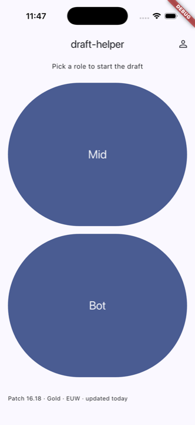
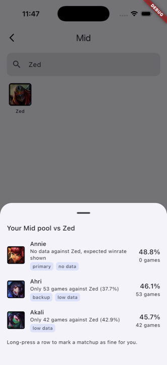
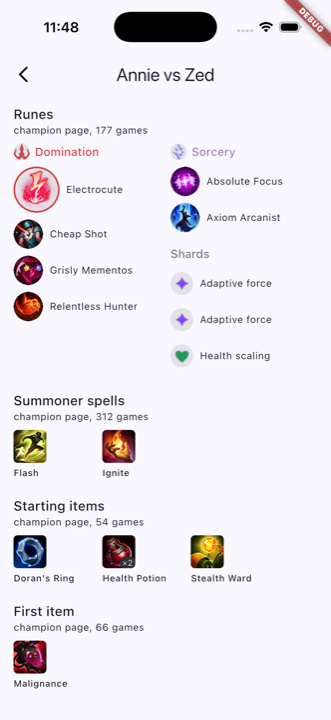
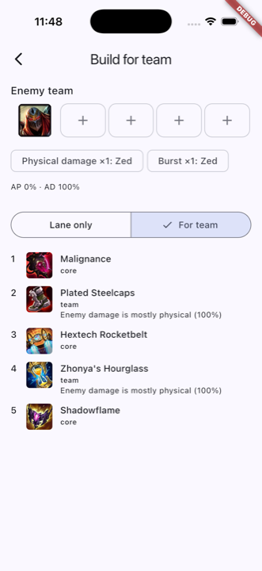

draft-helper
A mobile companion for ranked champion select. Your own champion pool, the lane opponent, the enemy team: three taps to a pick.




What it does
- You set two roles and 2–5 champions per role once. During champion select you tap your role, the enemy laner, and get your pool ranked by matchup win rate, with primary and backup picks.
- Blind pick when the opponent is not locked yet; banned champions can be marked in two taps and drop out of the pool and the opponent list.
- A matchup card shows the rune page laid out like the client, summoner spells, starting items, first item and boots.
- Enter the rest of the enemy team and the build adapts: anti-heal, armor or magic resist, boots, with a one-line reason for every situational item. Your pool is re-ranked against the whole composition.
- Everything works offline. Data packages are downloaded from this site and verified by checksum.
Where the data comes from
Statistics are aggregated from Ranked Solo/Duo matches on EUW in the Gold bracket, collected through the Riot Games API (league-v4 ladder entries, match-v5 matches and timelines). Champion, item, rune and spell names and icons come from Data Dragon.
Only aggregates are published: win rates and game counts per champion, per lane matchup and per enemy champion, the most played rune pages, spell pairs and item builds. The packages in packages/index.json contain no player identifiers, no match identifiers and no per-player data.
What it does not do
- No player lookup, no match history, no live game data, no information about the people in your lobby.
- No tracking of enemy ability or summoner spell cooldowns during the game.
- No account, no login, no advertising, no in-app purchases.
Privacy
The app stores your roles and champion pool on your device only. See the privacy policy.
Contact
Questions and reports: GitHub issues.